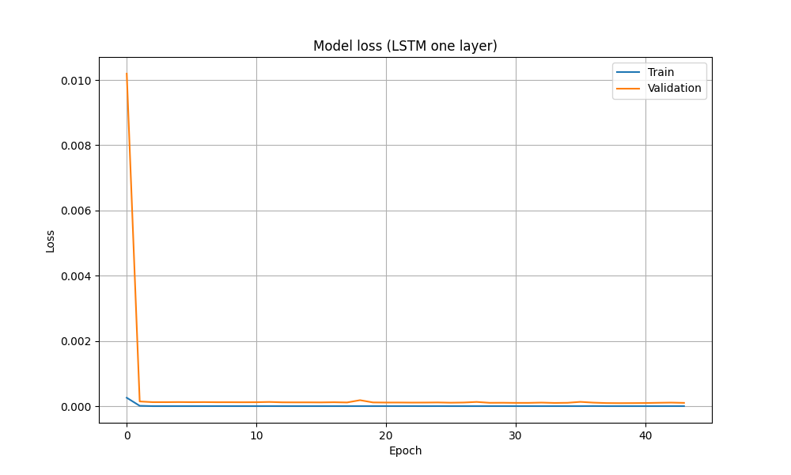

Results Display
POSSIBILITIES OF PARALLELISM IN IDENTIFYING A QUASILINEAR RECURRENT EQUATION
ВОЗМОЖНОСТИ ПАРАЛЛЕЛИЗМА ПРИ ИДЕНТИФИКАЦИИ КВАЗИЛИНЕЙНОГО РЕКУРРЕНТНОГО УРАВНЕНИЯ
LSTM Model Architecture
Архитектура модели LSTM
The LSTM model implemented has a single layer with 100 LSTM units, trained for 500 epochs with a batch size of 10. The model is designed to use the last 3 time steps (look_back) and 3-step sliding windows (window_size) to forecast the next time step in a sequence, making it suitable for time-series data prediction tasks.
Реализованная модель LSTM имеет один слой со 100 единицами LSTM, обученными для 500 эпох с размером пакета 10. Модель предназначена для использования последних 3 временных шагов (look_back) и 3-шаговых скользящих окон (window_size) для прогнозирования следующий временной шаг в последовательности, что делает его пригодным для задач прогнозирования данных временных рядов.
Download
Future Predictions using LSTM
Прогнозы на будущее с использованием LSTM
Forecasting for 14 days in the future
Прогноз на 14 дней вперед.
Download
Model loss using LSTM
Потеря модели с использованием LSTM

The plot for "Model loss using LSTM" would typically be a line graph that shows how the loss of the LSTM model changes over each epoch (iteration) of the training process. On the x-axis, you would have the number of epochs, and on the y-axis, you would have the value of the loss function.
График для «Потери модели с использованием LSTM» обычно представляет собой линейный график, показывающий, как потери модели LSTM меняются в течение каждой эпохи (итерации) процесса обучения. На оси X у вас будет количество эпох, а на оси Y у вас будет значение функции потерь.
Download
Testing Data and prediction using LSTM
Тестирование данных и прогнозирование с использованием LSTM
A plot titled "Testing Data using LSTM" typically displays how well a trained LSTM model is performing on unseen, or testing, data. In the context of time series forecasting or any other prediction task
График под названием «Тестирование данных с использованием LSTM» обычно показывает, насколько хорошо обученная модель LSTM работает с невидимыми или тестируемыми данными. В контексте прогнозирования временных рядов или любой другой задачи прогнозирования
Download
LSTMs Model Architecture
Архитектура модели LSTMs

Hyperparameters are pre-training settings, including batch size (number of samples processed together), epochs (total passes through the dataset), and units (output size of LSTM layer). These values directly influence the model's performance.
Гиперпараметры — это настройки перед обучением, включая размер партии (количество выборок, обработанных вместе), эпохи (общее количество проходов через набор данных) и единицы (выходной размер слоя LSTM). Эти значения напрямую влияют на производительность модели.
Download
Future Predictions using LSTMs
Прогнозы на будущее с использованием LSTMs
Forecasting for 14 days in the future
Прогноз на 14 дней вперед
Download
Model loss using LSTMs
Потеря модели с использованием LSTMs
The plot for "Model loss using LSTMs" would typically be a line graph that shows how the loss of the LSTMs model changes over each epoch (iteration) of the training process. On the x-axis, you would have the number of epochs, and on the y-axis, you would have the value of the loss function.
График для «Потери модели с использованием LSTMs» обычно представляет собой линейный график, показывающий, как потери модели LSTMs меняются в течение каждой эпохи (итерации) процесса обучения. На оси X у вас будет количество эпох, а на оси Y у вас будет значение функции потерь.
Download
Testing Data and prediction using LSTMs
Тестирование данных и прогнозирование с использованием LSTMs
A plot titled "Testing Data using LSTMs" typically displays how well a trained LSTMs model is performing on unseen, or testing, data. In the context of time series forecasting or any other prediction task
График под названием «Тестирование данных с использованием LSTM» обычно показывает, насколько хорошо обученная модель LSTM работает с невидимыми или тестируемыми данными. В контексте прогнозирования временных рядов или любой другой задачи прогнозирования
Download
BDLSTM Model Architecture
Архитектура модели BDLSTM
The updated parameters are set for a Bidirectional LSTM (BiLSTM) model. It includes "batch_size" of 10, "epochs" of 200 for training cycles, "look_back" of 20 for input sequence length, "units" of 200 for LSTM output dimension, and "window_size" of 10 for input feature size. In addition, the parameter "bilstm" is set to true, enabling the use of Bidirectional LSTM. The mode for merging the forward and backward LSTM outputs is set to "concat" by the "bilstm_mode" parameter.
Обновленные параметры установлены для двунаправленной модели LSTM (BiLSTM). Он включает в себя «batch_size» 10, «эпохи» 200 для обучающих циклов, «look_back» 20 для длины входной последовательности, «единицы» 200 для выходного размера LSTM и «window_size» 10 для размера входной функции. Кроме того, для параметра «bilstm» установлено значение true, что позволяет использовать двунаправленный LSTM. Режим объединения прямых и обратных выходных данных LSTM устанавливается на «concat» параметром «bilstm_mode».
Download
Future Predictions using BDLSTM
Прогнозы на будущее с использованием BDLSTM
Forecasting for 14 days in the future
Прогноз на 14 дней вперед
Download
Model loss using BDLSTM
Потеря модели с использованием BDLSTM
The plot for "Model loss using BiLSTMs" would be a line graph illustrating the change in loss of the BiLSTM model across each epoch of the training process. The x-axis signifies the number of epochs, while the y-axis represents the value of the loss function. This helps track how well the Bidirectional LSTM is learning from the data over time.
График для «Потери модели с использованием BiLSTM» будет представлять собой линейный график, иллюстрирующий изменение потерь модели BiLSTM в каждую эпоху процесса обучения. Ось x обозначает количество эпох, а ось y представляет значение функции потерь. Это помогает отслеживать, насколько хорошо двунаправленный LSTM учится на данных с течением времени.
Download
Testing Data and prediction using BDLSTM
Тестирование данных и прогнозирование с использованием BDLSTM
A plot titled "Testing Data using BiLSTMs" typically illustrates how effectively a trained BiLSTMs model is performing on unseen or testing data. In the context of time series forecasting or any other prediction task, it shows the model's predictions over time compared to the actual values, helping assess the Bidirectional LSTM's predictive capabilities.
График под названием «Тестирование данных с использованием BiLSTM» обычно показывает, насколько эффективно обученная модель BiLSTM работает с невидимыми или тестируемыми данными. В контексте прогнозирования временных рядов или любой другой задачи прогнозирования он показывает прогнозы модели с течением времени по сравнению с фактическими значениями, помогая оценить возможности прогнозирования двунаправленного LSTM.
Download
GRU Model Architecture
Архитектура модели GRU
The number of epochs is a hyperparameter that defines the number of times the learning algorithm will work through the entire training dataset. You've set it to 400, indicating that your GRU model will iterate through your training data 400 times.
Количество эпох — это гиперпараметр, который определяет, сколько раз алгоритм обучения будет работать через весь набор обучающих данных. Вы установили его на 400, указывая, что ваша модель GRU будет повторять ваши обучающие данные 400 раз.
Download
Future Predictions using GRU
Прогнозы на будущее с использованием GRU
Forecasting for 14 days in the future
Прогноз на 14 дней вперед
Download
Model loss using GRU
Потеря модели с использованием GRU
The plot for "Model loss using GRUs" would be a line graph illustrating the change in loss of the GRU model across each epoch of the training process. The x-axis signifies the number of epochs, while the y-axis represents the value of the loss function. This helps track how well the Gated Recurrent Unit is learning from the data over time.
График для «Потери модели с использованием ГРУ» будет представлять собой линейный график, иллюстрирующий изменение потерь модели ГРУ в каждую эпоху процесса обучения. Ось x обозначает количество эпох, а ось y представляет значение функции потерь. Это помогает отслеживать, насколько хорошо Gated Recurrent Unit учится на данных с течением времени.
Download
Testing Data and prediction using GRU
Тестирование данных и прогнозирование с использованием GRU
A plot titled "Testing Data using GRUs" typically illustrates how effectively a trained GRU model is performing on unseen or testing data. In the context of time series forecasting or any other prediction task, it shows the model's predictions over time compared to the actual values, helping assess the Gated Recurrent Unit's predictive capabilities.
График под названием «Тестирование данных с использованием GRU» обычно показывает, насколько эффективно обученная модель GRU работает с невидимыми или тестируемыми данными. В контексте прогнозирования временных рядов или любой другой задачи прогнозирования он показывает прогнозы модели с течением времени по сравнению с фактическими значениями, помогая оценить прогностические возможности Gated Recurrent Unit.
Download
Hyperparameters using Gridsearchcv algorithm for machine learning models
| Model |
Batch Size |
Epochs |
Look_Back |
Units |
Window_Size |
| LSTM |
10 |
500 |
3 |
100 |
3 |
| LSTMs |
5 |
200 |
3 |
300 |
3 |
| BDLSTM |
10 |
200 |
20 |
200 |
10 |
| GRU |
10 |
400 |
3 |
150 |
3 |
Error analysis of various optimized machine learning and GLDM models
| Model |
MSE |
RMSE |
MAE |
R^2 |
RRMSE |
r |
| LSTM |
517.49 |
22.75 |
9.98 |
1.00 |
4.77 |
1.00 |
| LSTMs |
1873.87 |
43.29 |
16.73 |
0.99 |
6.58 |
1.00 |
| BDLSTM |
150.81 |
12.28 |
7.23 |
1.00 |
3.50 |
1.00 |
| GRU |
84.80 |
9.21 |
3.52 |
1.00 |
3.03 |
1.00 |
| GLDM |
34.04 |
5.83 |
0.985 |
1.00 |
0.01 |
1.00 |
{kind=link}
{kind=link}
{kind=link}
{kind=link}
{kind=link}
{kind=link}
{kind=link}
{kind=link}
{kind=link}
{kind=link}
{kind=link}
{kind=link}
{kind=link}
{kind=link}
{kind=link}